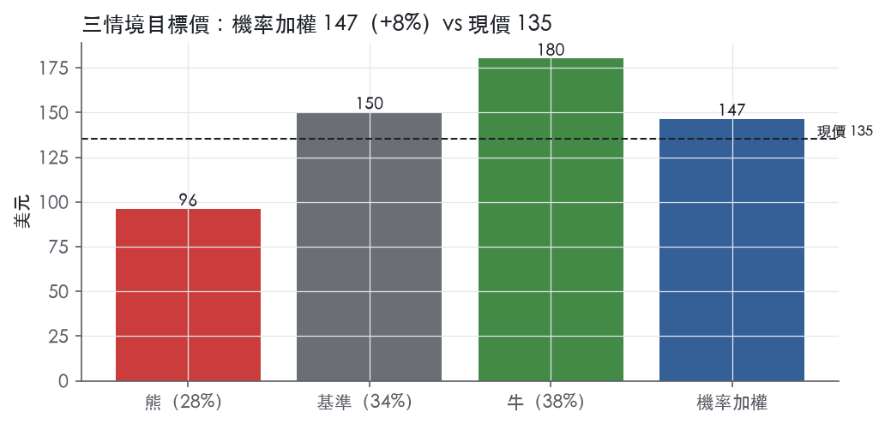
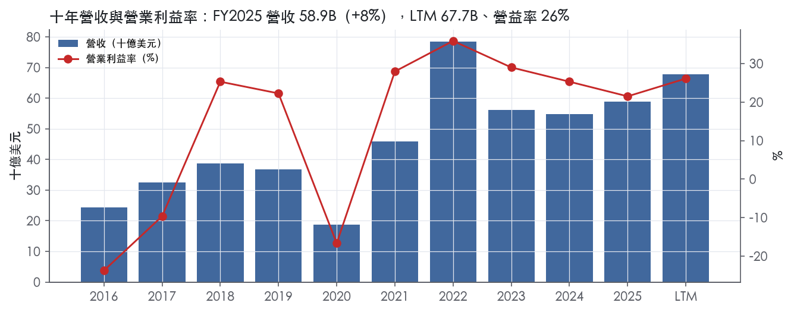
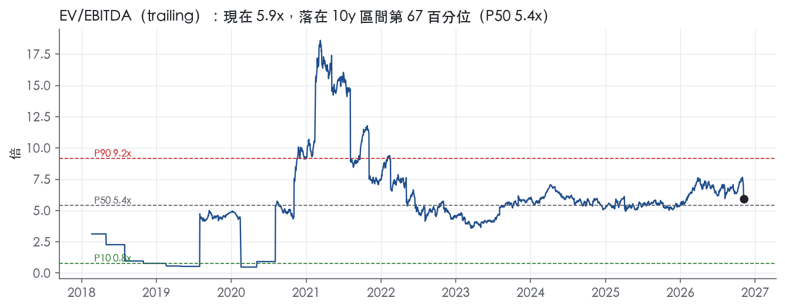
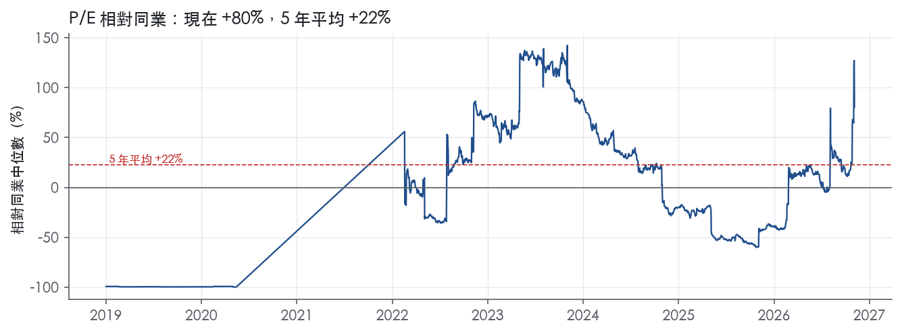
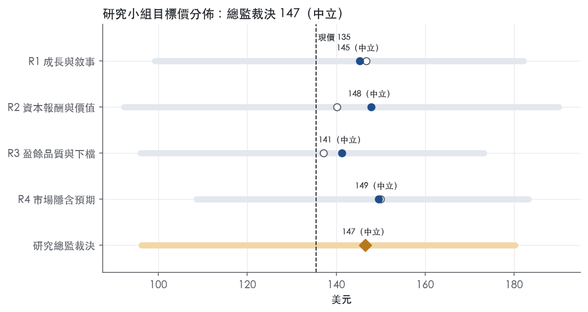
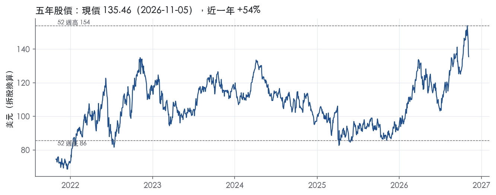

評等總表 › 能源 › COP
溢價退到88非2025，上調中立｜評等 中立｜目標價 147
| 報告日 | 評等 | 目標價 | 當時股價 | 超額報酬 |
|---|---|---|---|---|
| 2026-11-05 | 中立 | 147 | 135 | +0.8% |
| 2026-10-09 | 減碼 | 134 | 134 | -8.0% |
| 快評 | 動作 | 結論 |
|---|---|---|
| 2026-11-05 | 維持 | Q3 獲利高於預測四成，油價撐起，維持減碼 |
| 評等 | 中立 |
| 12 個月目標價 | 147 美元 |
| 現價 | 135.46 美元（2026-11-05） |
| 預期報酬 | 股價 +8.2%＋股息 2.5%＝總報酬 +10.7%；同業籃門檻 9.9%，超額 +0.8% |
| 估值方法 | EV/EBITDA 5.4x，套在三年平均的EBITDA |
| 三情境 | 熊 96／基準 150／牛 180 |
| 研究流程 | 四位研究員兩輪辯論＋研究總監裁決 |
| 資料來源 | SEC EDGAR XBRL、Tiingo、FRED（全免費） |
溢價退到88非2025，上調中立（研究總監裁決，四位研究員兩輪辯論後）
評等 中立｜12 個月目標價 147 美元（總監三情境機率加權 147 與研究員中位數 147 各半）｜現價 135.46（2026-11-05）
預期報酬：股價 +8.2%＋股息 2.5%＝總報酬 +10.7%。同業籃門檻 9.9%，超額 +0.8%。
估值方法：EV/EBITDA 5.4x，套在三年平均的EBITDA。三情境：熊 96（28%）／基準 150（34%）／牛 180（38%）。
什麼會讓研究總監改變看法：WTI 季均守 88 以上而 FY2026Q4 或 FY2027Q1 營益率 ≤25%，或 2027 年資本支出指引上修到回購跌破 CFO 45%，轉偏空；FY2026Q4 實現價守 60 以上且 2027 年產量指引顯示排除 Kirkuk 的中個位數有機量增，y2 轉正、錨移向 5y P50 5.6x，轉偏多。
| 過去四季（實際，FY2026Q3） | 未來四季 | 第 5–8 季 | 第 9–12 季 | |
|---|---|---|---|---|
| 營收（B） | 67.7B | 73.2B | 71.7B | 73.1B |
| 營收成長 | 13.3% | 8.0% | -2.0% | 2.0% |
| 營業利益率 | 26.1% | 28.0% | 27.0% | 25.5% |
| EPS（美元） | 9.50 | 11.59 | 11.31 | 11.27 |
| EPS 成長 | 33.4% | 22.0% | -2.4% | -0.4% |
| 每股股息（美元） | 3.36 | 3.36 | 3.36 | 3.36 |
| P/E（現價） | 14.3x | 11.7x | 12.0x | 12.0x |
| 股息殖利率（現價） | 2.5% | 2.5% | 2.5% | 2.5% |
過去四季為申報數字；預測為研究總監的假設、程式計算。倍數與殖利率都用現價計算，用來看現價對應各期獲利的高低。
| 項目 | 上次（2026-10-13） | 這次（2026-11-06） | 變動 |
|---|---|---|---|
| 評等 | 減碼 | 中立 | 變動 |
| 機率加權目標價（美元） | 134 | 147 | +9.6% |
| 超額報酬 | -8.0% | 0.8% | +8.8 pp |
| 目標倍數 | 5.8x | 5.4x | — |
| 未來四季營收成長 | 5.0% | 8.0% | +3.0 pp |
| 未來四季營益率 | 24.0% | 28.0% | +4.0 pp |
| 未來四季 EPS（美元） | 8.97 | 11.59 | +29.2% |
| 熊／基準／牛機率 | 25／47／28 | 28／34／38 | — |
程式計算；「未來四季」各自從當次報告的資料起點算。研究總監逐點說明見第八章「與上次報告比較」。
| 情境 | 機率（歷史） | 故事 | 未來四季營收成長 | 第 5–8 季營益率 | 倍數 | 目標價 | 股價漲跌 |
|---|---|---|---|---|---|---|---|
| 熊 | 28%（25%） | 風險表第 1 條 WTI 走 72（不避險、價格完整穿透）＋第 2 條卡達／Surmont 拖累＋第 3 條回購退到 30% 底線、股息成長凍結；4.8x 高於 5y P10 4.4x 因分母已是谷底 EBITDA | -2.0% | 21.5% | 4.8x | 96 | -29.0% |
| 基準 | 34%（36%） | WTI 97→88 後持平，營益率 28→27→25.5%，量依 Q4 指引回升，倍數停在市場付的 5.4x，報酬來自自由現金流壓低淨負債與縮股 | 8.0% | 27.0% | 5.4x | 150 | 10.9% |
| 牛 | 38%（39%） | WTI 走本行停滯性衰退路徑 95、卡達復產、Kirkuk 交割、回購維持 2.4B／季；取 R3 牛情境驅動，倍數改 R4 的 5y P50 5.6x（中週期預期抬高） | 11.0% | 29.5% | 5.6x | 180 | 33.1% |
目標價由程式依研究總監的驅動與倍數計算；機率由研究總監給定。括號內是歷史頻率：把這檔股票過去十年 12 個月報酬的波動形狀，置中在基準情境，結果落在各情境附近的比例。

四位研究員用不同方法各自估值，回應研究總監的質疑後交出第二輪，最後由總監逐點裁決。各研究員的主張見第七章，裁決理由見第八章，完整論證見《研究底稿》。
| 立場（一輪→二輪） | 加權目標價（一輪→二輪） | 評等（一輪→二輪） | 第二輪倍數 | 熊～牛目標價 | |
|---|---|---|---|---|---|
| R1 成長與敘事 | 中性→中性 | 147→145 | 中立→中立 | 5.4x | 99～182 |
| R2 資本報酬與價值 | 中性→中性 | 140→148 | 中立→中立 | 5.4x | 92～190 |
| R3 盈餘品質與下檔 | 中性→中性 | 137→141 | 減碼→中立 | 5.4x | 96～173 |
| R4 市場隱含預期 | 中性→中性 | 150→149 | 中立→中立 | 5.4x | 109～183 |
| 研究總監裁決 | 中性 | 147 | 中立 | 5.4x | 96～180 |
目標價由程式依各自的驅動與倍數計算；評等＝機率加權總報酬 − 同業籃門檻。
ConocoPhillips 是一家總部位於休士頓的獨立探勘生產（E&P）公司，在 14 個國家有營運及活動¹。公司全球探勘、生產、運輸並行銷原油、瀝青（bitumen）、天然氣、NGL 與 LNG¹。截至 2025 年底，公司員工約 9,900 人，總資產約 122B 美元，全年總產量為 2,375 MBOED¹。公司沒有下游煉油或零售業務，2012 年已把下游事業分割為 Phillips 66 獨立上市¹。客戶端是全球商品市場的買方——煉油廠、天然氣公用事業、工業用戶及其他油氣公司，而非終端消費者。
公司依地理區劃分五大營運分部：Alaska、Lower 48、Canada、Europe/Middle East and North Africa（EMENA）、Asia Pacific¹。Lower 48 是最大分部，2025 年貢獻合併液體產量的 67%、天然氣產量的 74%，資產以低供應成本、短週期的非常規頁岩為主（Delaware、Eagle Ford、Bakken、Midland）¹。Alaska 分部貢獻液體產量 12%、天然氣產量 1%，公司是阿拉斯加最大原油生產者，持有 Prudhoe Bay、Kuparuk 主要權益，並推進 Willow 計畫，預計 2029 年初首產油¹。Canada 分部（Surmont 油砂 + Montney 非常規）貢獻液體產量 9%、天然氣產量 5%¹。EMENA（挪威、卡達、利比亞、赤道幾內亞）貢獻液體產量 8%、天然氣產量 18%，含 QatarEnergy LNG N(3) 30% 權益等多個 LNG 合資案¹。Asia Pacific（澄洲、馬來西亞、中國）貢獻液體產量 4%、天然氣產量 2%，核心資產包括 Australia Pacific LNG 47.5% 權益¹。各分部均為上游一體，沒有獨立的產品線損益揭露，10-K 未揭露各分部的營收或 EBITDA 貢獻比重。LNG 布局方面，公司自稱為全球第二大 LNG 液化技術供應商，Optimized Cascade® 技術已授權用於全球 28 座 LNG 生產線¹；北美商業 LNG 承購協議已累積達 10.2 MTPA（10-K 揭露），後續兩季新聞稿顯示已進一步擴大至 12 MTPA（2026Q2）、13 MTPA（2026Q3）²³。
公司商業組織統籌全球商品組合，透過美國、加拿大、歐洲與亞洲辦公室執行行銷活動，原油、瀝青、NGL 主要依市場指數訂價、依地點與品質調整後出售¹。天然氣客戶包含地區配氣公司、燃氣與電力公用事業、大型工業用戶、國營與獨立油氣公司及行銷公司，主要銷往美國、加拿大與歐洲¹。LNG 則透過長期承購協議（如對 Sinopec 20 年期 7.6 MTPA、對關西電力 20 年期約 1 MTPA）銷往全球¹。地理上公司的儲量約 84% 位於 OECD 國家，反映地緣風險相對較低的資產組合定位¹。公司目前合約承諾未來交付約 9 MTPA 的 LNG、820B 立方英尺的天然氣與 175M 桶原油，到期日最長至 2042 年¹。員工地理分布上，美國占 62%、挪威 16%、加拿大 8%、赤道幾內亞 4%、馬來西亞 3%¹，顯示營運重心集中在北美與挪威，中東、非洲與亞太則以合資權益形式參與、人力配置相對精簡。
FY2025Q4 營收 13.39B 美元，年減 5.9%，營益率降至 16.9%（is/bs 資料包，期別 FY2025Q4）。FY2026Q1 營收回升至 15.76B 美元但仍年減 4.6%，營益率回到 21.4%（期別 FY2026Q1）。FY2026Q2 公司每股盈餘 3.23 美元、調整後每股盈餘 3.24 美元，CFO 7.4B 美元（扣除營運資金變動後 CFO 為 7.2B 美元）²；當季股票回購倍增至 2.0B 美元，股東總回饋達 3.0B 美元，公司提前達成 5B 美元資產處分目標，並將 LNG 承購擴大至 12 MTPA²；公司宣布第三季普通股息為每股 0.84 美元²；對第三季產量指引為 229 萬至 232 萬桶油當量/日²。FY2026Q3 每股盈餘 3.34 美元、調整後每股盈餘 3.27 美元，CFO 為 7.2B 美元³；公司將普通股息上調 11% 至每股 0.93 美元，第四季起生效³；當季股東總回饋 3.4 億美元中包含 24 億美元回購（原文「$3.4 billion」「$2.4 billion」，單位為 B）³；公司並取得 1.6B 美元的非核心資產處分收益，資本支出 3.1B 美元³；LNG 承購組合進一步擴大至 13 MTPA³；對第四季產量指引為 232 萬至 236 萬桶油當量/日，全年資本支出與調整後營運成本指引維持不變³。整體看，近四季營收與每股盈餘呈 V 轉向上，主要受油價實現價格回升帶動，而非產量成長——FY2026Q3 總公司產量年減 97 MBOED，公司將其歸因於中東衝突影響卡達及 Surmont 權利金提高，部分被 Lower 48 有機成長抵銷³。
公司將 Willow 計畫列為北坡關鍵成長引擎，模組製造進度已逾 75% 完成，預計 2029 年初首產油³。管理層稱目標是「to 2029 年達成同業領先的 70 億美元自由現金流躐升（$7 billion free cash flow inflection by 2029）」，並強調 2029 年並非終點，憑藉產業內最深、最高品質的上游資產組合，可在具優勢的再投資率下持續成長 CFO 與自由現金流至下一個十年³。公司持續推進 LNG 商業承購組合擴張（由 10.2 MTPA 一路擴大到 13 MTPA）作為對沖與成長槓桿¹³。公司同時以 2026 年 45% 的 CFO 回饋股東為目標，並以「top-quartile S&P 500 growth」的股息成長率自我定位³。公司也透過伊拉克 Kirkuk 地區 42% 合資權益、重返敘利亞等舉動，低成本擴充中東傳統資產庫存²。整體而言，COP 的敘事是「Permian 效率紅利 + LNG 選擇權 + Willow 長期產量補給」三線並進的現金流機器，而非單一油價槓桿故事；但 2026 年來產量年減（調整收購處分後仍減 2–4%）顯示有機成長的絕對貢獻目前仍小於地緣與權利金的拖累，自由現金流改善主要來自價格與股票回購的財務工程而非量增；投資人應關注 Willow 2029 首產前的資本支出節奏是否侵蝕當前股東回饋力度。

COP 的護城河評級為「窄」，我們有把握未來 5 年以上週期平均 ROIC 仍高於資本成本，但沒有把握撐到 10 年以上。COP 的優勢來自資產本身：低供應成本的資源庫存、阿拉斯加自有基礎設施，以及長年期的特許與 LNG 合約。這些都是實體與合約層面的優勢，不是定價權，公司仍是商品價格的接受者。趨勢判為穩定：近四年 ROIC 從 32.2% 降到 10.1%（資料包），主要是油價正常化，不是競爭地位流失。
COP 的優勢來源有三類：成本優勢、效率規模、無形資產（特許與授權），沒有轉換成本或網路效應的證據。
數字支持「窄」，不支持「寬」。
最大的侵蝕因子是 COP 先天沒有定價權。
目標倍數應與同業持平，不給溢價。COP 的超額報酬來自週期平均下的資產成本優勢，ROIC 波動大、最新值貼近資本成本，不足以支撐高於同業的倍數，溢價也不應假設延續超過 5 年。目前 P/E 14.3x 已高於自身 5 年中位數 12.4x，位在 5 年分位 73.2%（px 快照），估值研究員應以週期中位倍數錨定，不宜把 LTM 高點獲利資本化。
| 指標 | 最新 | 十年平均 | 標準差 | 最低 | 最高 |
|---|---|---|---|---|---|
| ROIC | 10.1% | 12.3% | 11.1% | -6.6% | 32.2% |
| 毛利率 | 62.1% | 61.2% | 3.1% | 56.7% | 67.7% |
| 營業利益率 | 21.5% | 13.7% | 20.5% | -23.7% | 35.9% |
| FCF 利潤率 | 18.6% | 13.2% | 8.5% | -1.9% | 25.5% |
| ROE | 12.4% | 15.9% | 13.5% | -8.3% | 40.0% |
程式計算。資本成本代理值（10 年債＋5%）：9.9%；ROIC 平均減資本成本：2.4%；ROIC 有資料的 9 年中，高於資本成本 7 年。
ConocoPhillips 的 LTM 營業現金流／淨利為 2.01x、自由現金流／淨利為 1.17x，兩者皆遠高於綠燈門檻，且近三年平均（2.16x、1.02x）與 LTM 一致，顯示盈餘有紮實的現金支撐。應計比率 LTM 為 -9.3%，近三年與十年平均同為負值且遠優於 5.0% 的紅燈門檻，代表公司現金流持續優於帳列淨利，沒有靠應計項目灌水盈餘。計分表七個項目全部亮綠燈，唯一需要解釋的雜訊是十年平均欄位被 2016、2020 兩個虧損年度扭曲，詳見下方紅旗逐條說明。
現金持續跑在盈餘前面，不是落後。LTM 現金提供之營運活動（CFO）19.8B 美元，而 LTM 淨利對應的 CFO／淨利為 2.01x。公司在 10-K 中直接揭露 2025 年現金來自營運活動為 $19.8 billion，產量 2,375 MBOED⁴。FCF 方面，LTM 自由現金流為 13.55B 美元，對應淨利覆蓋率 1.17x，近三年平均 1.02x，顯示即便在資本支出高峰年（FY2023 資本支出／營收 21.4%）現金仍能撐住盈餘。唯一要提醒的是 2025 年 CFO 中含有不會重複出現的現金稅收益——Marathon Oil 整合的一次性利益約 $1 billion（其中 $0.5 billion 為外國稅額扺減、其餘多數為淨營運損失的現金稅利益，大部分於 2025 年認列）⁴，以及 OBBBA 法案帶來約 $0.4 billion 現金稅利益於 2025 年認列⁴。這兩項合計約 1.4B 美元屬於真實收到的現金，但不會在 2026 年以後重複發生，估值時 CFO 的「可持續部分」應該扣掉這塊。
這一季的特殊項目方向罕見地是「拉高」而非壓低 GAAP 盈餘。第三季 2026 GAAP EPS 為 $3.34，調整後（Non-GAAP）EPS 反而較低，為 $3.27³，公司說明「本季特殊項目主要反映稅務準備金的迴轉」³，也就是一次性的稅務利益被計入 GAAP 淨利但在調整後盈餘中剔除。這代表管理層自己認定這筆稅務迴轉不具代表性，調整後數字更貼近營運常態盈餘，我認同應以調整後 EPS 作為估值基礎，而非直接用本季 GAAP EPS 3.34 外推全年。此外，10-K 層級還有兩筆影響較大但屬於一次性的收益：Marathon Oil 整合的約 $1 billion 一次性稅務／協同利益與 OBBBA 的 $0.4 billion 現金稅利益⁴，兩者雖是真實現金進帳，但不會在未來年度重複，分析時應從「正常化 CFO」中剔除再做估值基準。SBC／營收長期僅 0.6%~0.7%，對 E&P 公司而言金額極小，不構成需要加回調整的盈餘稀釋議題。
槓桿極低、信評穩健、股東回饋積極但有紀律。淨負債／EBITDA LTM 僅 0.45x，近三年平均 0.65x，遠低於 1.50x 綠燈門檻，公司在 10-K 中亦明確表示「致力維持 'A' 評級，2025 年全年皆維持此評級」⁴。利息保障倍數 LTM 17.1x、近三年 15.1x，付息能力無虞。資本配置上，2025 年合計配發股利與回購 9.0B 美元，佔 CFO 46%⁴，公司目標是把超過 30% 的 CFO 還給股東⁴，而 2026 年目標已上調至 45% 的 CFO 回饋比率³。第三季 2026 股利再度上調 11% 至每股 $0.93³，稀釋股數年變動 LTM 為 -1.5%，顯示回購淨減少流通股數，非靠發股灌水 EPS。資產負債表末端現金與短期投資達 10.4B 美元（截至 2026Q3）³，流動性充足，支撐持續的股東回饋與資本支出計畫。
程式標出的四條紅旗全部是淨利率的年度跳動，且全部可用油價週期完全解釋，不是盈餘品質問題。
此外計分表中三個「十年平均」欄位數字看似異常但被 LTM／近三年綠燈覆蓋，應說明為統計口徑假警報：CFO／淨利十年平均僅 0.24x（遠低於 LTM 2.01x）是因為分母淨利在 2016、2020 兩個虧損年度接近零或為負，使比率失真，並非近年現金轉換惡化。同理，稀釋股數年變動十年平均高達 10650.8%，以及（股利＋回購）／淨利十年平均為 -3.7%，都是同樣的分母扭曲（公司在轉虧年度幾乎沒有或負淨利，分母接近零導致比率爆炸或變負），應以 LTM 與近三年數據為準，而非十年平均。SBC／營收 LTM 欄位顯示「—」，為資料缺值而非紅燈觸發，不影響整體判斷，因近三年與十年平均皆為低個位數百分比且穩定。
盈餘品質屬高，估值應以調整後（Non-GAAP）盈餘與正常化 CFO 為基礎，而非直接外推本季因稅務準備金迴轉墊高的 GAAP EPS 3.34。Marathon Oil 整合一次性利益（~1B 美元）與 OBBBA 現金稅利益（0.4B 美元）應從 CFO 基礎中剔除，否則會高估 2026 年以後的現金生成能力。槓桿極低（淨負債／EBITDA 0.45x）且利息保障充裕，不構成限制估值倍數的理由，目前 trailing P/E 14.3x 落在五年分位數 73.2%、EV/EBITDA 5.9x 落在 63.0% 分位，屬中性偏高區間，但盈餘品質本身不需要額外打折。
| 項目 | LTM | 近三年 | 十年 | 燈號 | 規則 |
|---|---|---|---|---|---|
| 營業現金流／淨利 | 2.01x | 2.16x | 0.24x | 綠 | ≥1.00x 綠、<0.80x 紅 |
| 自由現金流／淨利 | 1.17x | 1.02x | 0.43x | 綠 | ≥0.90x 綠、<0.60x 紅 |
| 應計比率（(淨利−CFO)／平均總資產） | -9.3% | -9.7% | -9.7% | 綠 | ≤0.0% 綠、>5.0% 紅 |
| SBC／營收 | — | 0.6% | 0.7% | 綠 | ≤3.0% 綠、>8.0% 紅 |
| 淨負債／EBITDA | 0.45x | 0.65x | 1.79x | 綠 | ≤1.50x 綠、>3.00x 紅 |
| 利息保障倍數（營業利益／利息） | 17.1x | 15.1x | 10.6x | 綠 | ≥8.00x 綠、<3.00x 紅 |
| 稀釋股數年變動 | -1.5% | -0.5% | 10650.8% | 綠 | ≤0.0% 綠、>3.0% 紅 |
| （股利＋回購）／淨利 | 91.1% | 103.9% | -3.7% | 綠 | ≥50.0% 綠、<0.0% 紅 |
| 存貨成長 − 營收成長（FY2025） | -4.1pp | — | — | 綠 | ≤5pp 綠、>15pp 紅 |
程式計算；燈號以 LTM（無則近三年平均）判定。
| 風險 | 觸發指標（看什麼數字、在哪裡看） | 對 EPS 的影響方向與粗略幅度 | 未來 12 個月發生機率（高／中／低） | 出處 |
|---|---|---|---|---|
| 商品價格（原油/天然氣）下行 | WTI/Brent/Henry Hub 季均價；季報「total average realized price per BOE」 | 負向、大：2025 全年實現價跌 19%，營收減 4,199M 美元中部分被量增抵銷⁵ | 高 | 10-K 年報 FY2025 Item 1A（風險因素） |
| 地緣衝突/權利金侵蝕有機產量 | 季度「adjusted for closed acquisitions and dispositions」產量年增/減（MBOED）；Qatar、Surmont 權利金揭露 | 負向、中：FY2026Q3 總產量年減 97 MBOED，調整後仍減 40 MBOED（2%），因中東衝突影響 Qatar 及 Surmont 權利金提高³ | 中 | 8-K 財報新聞稿（2026-11-05） |
| 資本返還框架（回購/股息）可持續性 | 每季「% return of CFO」、回購金額（8-K）；CFO 走勢 | 負向、中：公司目標 2026 年回饋 CFO 的 45%，若 CFO 因油價下滑收縮，回購/股息增速將放緩，直接影響每股指標（EPS 不變但市場估值敏感）³ | 中 | 10-K 年報 FY2025 Item 1A（風險因素） |
| Willow／LNG 大型資本計畫執行延遲或超支 | Willow 模組製造完工進度（%）；LNG offtake MTPA 數字；首產油時程 | 負向、中：Willow 模組製造逾 75% 完成，預計 2029 年初首產，若延遲將推後「2029 年 7B 美元自由現金流躐升」目標的實現³ | 中 | 8-K 財報新聞稿（2026-11-05） |
| 氣候/環境法規與訴訟（Superfund 類立法、EU ETS、碳稅） | EU ETS/UK ETS/挪威碳稅年度合規成本（M 美元）；新增 Climate Superfund 立法州數 | 負向、小：2025 年 EU ETS 合規成本約 21M 美元、UK ETS 約 2.2M 美元、挪威碳稅約 42M 美元⁵，單一年度金額小，但紐約/佛蒙特等「polluter pays」立法擴散若成形，潛在負債規模不可估⁵ | 低 | 10-K 年報 FY2025 Item 1A（風險因素） |
商品價格下行是五條中機率與幅度乘積最高的一條。公司自身強調「earnings and operating cash flows generally correlate with price levels for crude oil and natural gas, which are subject to factors external to the company and over which we have no control」⁵，且公司策略是「unhedged」，不做價格避險⁵。2025 年 Brent、WTI 均價分別年減 14%，公司總實現價年減 19%，直接造成營收減少 4,199M 美元（部分被 Marathon Oil 併購帶來的增量抵銷）⁵。監測方法很直接：每季看 WTI/Brent/Henry Hub 均價與公司「total average realized price per BOE」,一旦連續兩季年減幅擴大,即是盈餘下修訊號。
地緣衝突/權利金侵蝕有機產量排第二，因為它已經在最新一季實際發生，不是假設性風險。FY2026Q3 總公司產量年減 97 MBOED，調整收購處分後仍年減 40 MBOED（2%），公司明確歸因於「the impact of the Middle East conflict on Qatar and higher Surmont royalties」部分抵銷了 Lower 48 的有機成長³。這代表即使油價不跌，產量端本身也有拖累因子，且這個因子（中東地緣、加拿大權利金稽核）不是公司能控制的。監測指標是每季新聞稿揭露的「adjusted for closed acquisitions and dispositions」產量年增/減數字。
資本返還框架可持續性排第三。公司的估值敘事高度依賴「greater than 30 percent」到「45% 2026 年度回饋 CFO」的持續性與股息「top-quartile S&P 500 growth」定位¹³。2025 年公司已將回購與股息合計回饋 9.0B 美元，占 CFO 的 46%¹；若油價下行壓縮 CFO，公司需在「維持評等」與「維持回饋承諾」之間取捨，股票的回購支撐力道會先被砍。監測指標是每季 8-K 揭露的回購金額（M/B 美元）與股息率是否連續上調。
Willow／LNG 大型資本計畫執行風險排第四。公司把長期估值故事繫在「2029 年 7B 美元自由現金流躐升」³，而這個目標高度依賴 Willow 於 2029 年初如期首產。目前模組製造進度逾 75% 完成³，屬於大型北極開發項目，歷史上此類項目延遲與超支常見。監測指標是每季財報對 Willow 進度百分比與時程語言的措辭變化（例如「on track」是否被改為「delayed」）。
氣候/環境法規與訴訟排最後，因為目前揭露的年度合規成本金額都很小（EU ETS 約 21M 美元、UK ETS 約 2.2M 美元、挪威碳稅約 42M 美元、BC OBPS 預估最高 12.3M 美元）⁵，單一年度對 EPS 的直接影響很小。但紐約與佛蒙特已通過「Climate Superfund」立法，要求能源公司為歷史排放付費，且加州、新罕布夏、奧勒岡 2025 年已提出「Climate Private Action」法案，允許個人就氣候損害提出嚴格責任訴訟⁵；若更多州跟進，潛在負債規模目前無法量化，屬尾部風險。監測指標是新增通過此類立法的州數量。
Marathon Oil 整併後的協同效益能否持續兌現：公司已將整併一次性效益（含稅務抵免利用）計入 2025 年獲利，10-K 揭露「more than $1 billion of synergies on a run-rate basis」及約「$1 billion of one-time benefits」¹，但一次性稅務利益（如 455M 美元的外國稅額抵免利用）不會重複發生，2026 年起若協同效益不如預期兌現，Corporate and Other 的負向貢獻（2025 年已達 -1,138M 美元）可能進一步擴大，侵蝕合併淨利。建議追蹤每季 10-Q 的「Corporate and Other」淨利數字變化。
股息大幅上調（11%）後的可逆性：公司在 2026Q3 將普通股息一次上調 11% 至每股 0.93 美元，並以「top-quartile S&P 500 growth」自我定位³，但 10-K 本身也提醒「our Board may determine not to pay a dividend in a quarter or may cease declaring a dividend at any time」¹。在油價走弱情境下，一次性大幅上調後若被迫凍結或下修，市場對公司「peer-leading distributions」敘事的信任度會急跌，對估值倍數的衝擊可能大於對 EPS 本身的衝擊。建議追蹤股息宣告頻率與幅度是否出現停滯訊號。
現價 135.46 對應 trailing（過去四季）P/E 14.3x、EV/EBITDA 5.9x、EV/EBITA 9.8x、EV/Sales 2.6x、FCF 殖利率 8.5%。主要估值倍數 EV/EBITDA 現在 5.9x，落在10 年區間第 67 百分位（P10／P50／P90 = 0.8x／5.4x／9.2x）。

把程式的機械基準預測放到現價下，市場付的前瞻倍數是：EV/EBITDA（未來四季） 5.4x、P/E（未來四季） 12.6x、EV/EBITDA（第 5–8 季） 5.1x、P/E（第 5–8 季） 11.5x。反推 DCF 顯示市價隱含未來五年營收年成長 -2.0%（WACC 9.0%、終值成長 3.0%、FCF 利潤率 19.9%，SBC 不加回）。
| 倍數 | 現在 | 10 年 P10 | 10 年 P50 | 10 年 P90 | 現在分位 | 全期 P50 |
|---|---|---|---|---|---|---|
| P/E | 14.3x | 0.0x | 10.5x | 19.4x | 80.6% | 10.5x |
| EV/EBITDA | 5.9x | 0.8x | 5.4x | 9.2x | 67.2% | 5.4x |
| EV/EBITA | 9.9x | 1.4x | 8.7x | 18.0x | 66.5% | 8.7x |
| EV/EBIT | 9.9x | 1.4x | 8.7x | 18.0x | 66.5% | 8.7x |
| EV/Sales | 2.6x | 0.3x | 2.3x | 3.2x | 68.3% | 2.3x |
| P/S | 2.4x | 0.0x | 2.1x | 2.8x | 72.5% | 2.1x |
| P/FCF | 12.0x | 0.0x | 11.5x | 23.2x | 54.6% | 11.5x |
trailing 倍數（股價 ÷ 過去四季）；分位以每個交易日計算。
同業籃：PSX, MPC, PBF, SUN, SUNC, CVX（SIC 2911 同業 18 家中，CY2025 營收最接近的 6 家）。評等門檻 9.9%：同業「倍數不變下持有一年」的隱含報酬中位數（＝ FCF 殖利率 ×(1＋g)＋g，g 為 5 年營收年複合成長並夾在 −2%～8%），每家夾在 0～15%、P/E 低於 5 倍視為資料可疑而排除，中位數再限制在 10 年債到 10 年債＋5% 之間（同業原始中位數 15.0%）；排除：PBF（P/E 3.1x 資料可疑）、SUN（隱含報酬算不出來）。
| 代號 | 市值 | 5 年營收 CAGR | 營益率 | ROIC | P/E | 5 年 P/E 中位數 | EV/EBITDA | P/FCF | 隱含報酬 |
|---|---|---|---|---|---|---|---|---|---|
| COP | 160.2B | 25.7% | 26.1% | 10.1% | 14.3x | 12.4x | 5.9x | 11.8x | 17.1% |
| PSX | 96.4B | 15.6% | 8.7% | 8.6% | 7.9x | 13.9x | 6.3x | — | 21.7% |
| MPC | 105.6B | 13.7% | 12.5% | 15.7% | 7.4x | 8.5x | 5.0x | 5.1x | 29.3% |
| PBF | 8.4B | 14.2% | 9.8% | -0.6% | 3.1x | — | 1.9x | 3.2x | 41.8% |
| SUN | — | 18.7% | 4.6% | — | — | — | — | — | — |
| SUNC | 3.3B | 4.5% | 4.6% | — | 14.5x | — | — | — | 11.7% |
| CVX | 418.5B | 14.8% | 17.2% | 6.9% | 15.5x | 15.4x | 6.8x | 12.3x | 16.8% |
| 同業中位數 | 14.5% | 9.3% | 7.8% | 7.9x | 13.9x | 5.6x | 5.1x | 9.9% |
全部 trailing，程式以各公司 SEC XBRL 與 Tiingo 行情計算；第一列為本檔。
P/E 相對同業中位數：現在 80.4%，過去 1 年平均 1.3%、3 年 3.1%、5 年 22.4%；EV/EBITDA 相對同業中位數：現在 3.7%，過去 1 年平均 -26.9%、3 年 -15.9%、5 年 -10.7%。

程式的機械基準（成長率從過去四季年增率三年收斂到 6%、利潤率持平）用 EV/EBITDA 10 年 P50（trailing） 估值得到 161（18.6%），用現行倍數得到 177。這兩個數字只是參考點，不是本報告的目標價；研究員對這個定價的回應在第七章。
下表是每位研究員第一輪（各自獨立）與第二輪（回應研究總監的質疑後）的結果。目標價全由程式依各自的假設計算。
| 立場（一輪→二輪） | 加權目標價（一輪→二輪） | 評等（一輪→二輪） | 第二輪倍數 | 熊～牛目標價 | |
|---|---|---|---|---|---|
| R1 成長與敘事 | 中性→中性 | 147→145 | 中立→中立 | 5.4x | 99～182 |
| R2 資本報酬與價值 | 中性→中性 | 140→148 | 中立→中立 | 5.4x | 92～190 |
| R3 盈餘品質與下檔 | 中性→中性 | 137→141 | 減碼→中立 | 5.4x | 96～173 |
| R4 市場隱含預期 | 中性→中性 | 150→149 | 中立→中立 | 5.4x | 109～183 |
| 研究總監裁決 | 中性 | 147 | 中立 | 5.4x | 96～180 |
目標價由程式依各自的驅動與倍數計算；評等＝機率加權總報酬 − 同業籃門檻。
分歧度：第一輪 加權目標價 137～150（區間＝現價的 9%）· 倍數 5.2～5.4x · 立場 中性×4（方向一致）；第二輪 加權目標價 141～149（區間＝現價的 6%）· 倍數 5.4～5.4x · 立場 中性×4（方向一致）。

| 研究員 | 第二輪主張 | 堅持的理由 |
|---|---|---|
| R1 成長與敘事 | 中性，倍數 5.4x；第二年營收 −1%，量增抵銷大部分價跌。 | 卡達回補、Kirkuk 交割與 Lower 48 成長會帶動產量回升。 |
| R2 資本報酬與價值 | 中性，倍數 5.4x；第三年營益率回到十年中位數 23.8%。 | 資本報酬率降到 10.1%，產量年減，倍數不該高於十年中位數。 |
| R3 盈餘品質與下檔 | 中性，倍數 5.4x；營益率 28%、27%、25.5%，第二筆 $1B 降本支撐。 | 牛情境不擴張倍數；熊情境回購退到 30% 底線，倍數 4.8x。 |
| R4 市場隱含預期 | 中性，倍數 5.4x；市場接受營益率 25.4%，他估 28%。 | 5.1x 是市場對它自己都不信的路徑付的價格，不能當持平基準。 |
每位研究員的逐條回應與完整論證見《研究底稿》（COP_研究底稿_2026-11-06.docx）。
| 分歧點 | R1 | R2 | R3 | R4 | 什麼資料會分出勝負 |
|---|---|---|---|---|---|
| Q5–Q8 營收：WTI 88 下量能否補價（rev_growth_y2） | −1%：產量橋 y2 約 2,360 MBOED（卡達回補、Kirkuk、Lower 48） | 0%：量增完全抵銷價跌 | −3%：卡達／Surmont 拖累延續 | −2%：與市場同站、不信基準 +8.4% | 2027-02 FY2026Q4 財報的 2027 年產量指引、Kirkuk 是否交割；FY2027Q1 實現價／BOE |
| 利潤率回歸十年中位還是跟價格走（op_margin_y2／y3） | 26.0／25.5，同一把敏感度尺 | 25.5／23.8，y3 回歸十年中位 | 27／25.5，兩個實現價對應點＋第二筆 $1B 降本 | 27／26，由 Q3 30.8% 推下 | FY2027Q2 單季營益率（WTI 季均 85–92 下是否 ≥26%）；Q4 法說降本到位比例 |
| 倍數：5.4x 對市場持平 5.1x、對 5y P50 5.6x（multiple） | 5.4x@ntm：一年後 LTM 裝滿高價季，trailing 落 1y P10 | 5.4x@mid_cycle：ROIC 收斂到 10.1%，不取 5.6x | 5.4x：de-rating 是類股非個股，不再折價 | 5.4x：5.1x 是對沒人信的基準 Q5–Q8 所付價格，5.1→5.4 是判斷 | FY2026Q4 財報後，油價 88 下股價若守 135，市場對我們路徑付的倍數 >5.4x；事後實現前瞻帶 |
| 情境設計：牛倍數擴不擴、熊倍數多深、機率 | 牛 5.9x／熊 4.4x；34/38/28 | 牛 5.9x／熊 4.8x；36/36/28 | 牛 5.4x 不擴張／熊 4.8x；36/36/28 | 牛 5.6x／熊 5.2x；38/30/32 | FY2026Q4 財報的 2027 年資本支出與回購指引；WTI 季均是否跌破 80 |
分歧一（rev_growth_y2）裁 R4 的 −2%。 決定性證據是 8-K 2026-11-05 的 Q4 產量指引 2.32–2.36 百萬桶油當量／日，高於 Q3 的 2,302 MBOED，量在回升；R3 把卡達／Surmont 拖累（Q3 調整後年減 2%）延續到 Q5–Q8 沒有依據。R1 的產量橋把卡達回補 +20、Kirkuk +20 MBOED 計入，但本行 97→88 本身就是中東降溫路徑，卡達的量回來和油價下跌是同一件事的兩面，橋只算量沒扣價；Kirkuk 規模材料未揭露。R2 的 0% 需要量增完全抵銷 97→88 的價跌，而 Q3 調整後產量仍年減，拿不出中個位數有機量增的證據。R4 與市場對 Q5–Q8 的定價站在同一邊，且他的營收預測紀錄最準（絕對誤差 2.0%、勝率 57%）。
分歧二（op_margin_y2／y3）裁 R3 的 27%／25.5%。 基準的十年中位 23.8% 含 FY2016 −23.7%、FY2020 −16.6%，是崩盤年的利潤率，與 WTI 88 不可比；R2 的「均值回歸」是 ROIC 論點，他已用 5.4x 倍數表達過一次，再壓 y3 是重複計算，且 R2 的營業利益紀錄系統性偏低（誤差中位 −4.3%、勝率 62% 最低）。兩個實現價對應點——FY2025Q3 $46.44／BOE 對 19.5%、FY2026Q3 $61.40 對 30.8%（8-K 2026-11-05）——把 88 放在區間偏上。R3 對 Q4 的拒絕成立：10-K Item 7 在 Marathon 協同之外另有「Separately… more than $1 billion… by year-end 2026」的降本計畫，只有一部分進了 LTM，這是 y2 守 27% 的公司特有支撐。R4 的 y3 26% 不取：他的營業利益紀錄偏高（+1.3%），R3 偏低（−2.9%）；Willow 2029 年初首產落在 Q9–Q12 尾端開始提列折舊，y3 比 y2 低 1.5pp 合理。
分歧三（multiple）own：5.4x、ebitda、mid_cycle。 5.1x 不取，R4 的拆解成立：同樣 5.4x，基準 EBITDA 算出 161、R4 的路徑算出 150，我們對 EBITDA 的修正相對基準是向下的；5.1x 是市場對一條連市場自己都不信的 +8.4% 路徑所付的單位價格，不是持平。5.6x（5y P50）與上次的 5.8x（3y P50）不取，理由全是公司因素：ROIC 從 FY2022 的 32.2% 落到 FY2025 的 10.1%貼近資本成本、Q3 產量年減 97 MBOED、Willow 首產前資本流出到 2029，護城河章結論「窄、不給溢價」。R1 的 1 年帶補上機制：LTM EBITDA 偏低時市場付到 P50 6.6x，現在 LTM 裝進兩個高價季便落到 5.9x（1y 分位 23.4%），一年後裝滿四個高價季，trailing 會往 1y P10 5.4x 靠，恰等於 10y P50。CVX 6.8x 只作上限交叉檢查。期間口徑依劇本用 mid_cycle；R1 的 ntm 是同一數字套不同分母，不另採。
分歧四（情境設計）own：牛 5.6x（取 R4）、熊 4.8x（取 R3）。 牛 5.9x 退回：那是今天 LTM 含兩個峰值季的 trailing 倍數，照 R1 自己的基準邏輯，LTM 再裝滿高價季倍數會壓縮，不可能在 95 路徑更高的分母上守住 5.9x——R1 的基準與牛情境互相矛盾。R3 的「牛不擴張」太嚴：95 持續會抬高市場對中週期油價的預期（存續期變長），mid_cycle 分母下允許回到 5y P50 5.6x。熊 4.4x（5y P10）退回：那個分位出現在 2022 年峰值 EBITDA 當分母時，套在谷底 EBITDA 上是雙重懲罰（R3 的論點）；R4 的 5.2x 退回：風險表第 3 條（回購退到 30% 底線、股息成長凍結）打的是「peer-leading distributions」敘事，是倍數層級的衝擊，R3 的熊是唯一完整對到風險表第 1、2、3 條的情境。
漂移。 R2 第二輪加權 +5.5%、向中位數靠攏 83%，逐條追溯來自 V1（利潤率，證據 ／FY2026Q1／FY2026Q3 與敏感度表）與 V2（機率，證據歷史頻率表），兩條都是我第一輪的意見且附證據，不是漂移；R3 的 +3.0% 來自 Q2、Q3，同理。R1、R4 變動在 1% 內。無退回。R3 對 Q1 的選擇接受：門檻 9.9% 正好等於上限「10 年債 4.9% 加 5 個百分點」，煉油籃的組成實際上沒有決定這個數字，它就是股票門檻；R3 第二輪立場與評等已一致。
總經偏離。 四位 macro_deviations 皆為空，全部用本行 97→88、牛 95、熊 72。R3 已刪除第一輪未申報的 EIA 76，R2 已刪除以利率壓倍數的理由，其餘無人用利率當倍數理由。Q5–Q8 把 88 持平延伸是前提期限外的慣例，不算偏離。全部接受，macro_deviations 為 []。
機率推導：牛約比基準高 20%、熊約低 36%。置中分布 ≥+10% 的頻率 39%；≤−10% 38%、≤−20% 25%，熊半程約 −18% 對應約 28%。我給 38／34／28，與歷史差距在 2pp 內，牛多於熊與歷史一致（十年 62% 的起點上漲）。本行油價路徑機率（95 路徑 25%、72 路徑 20%）不直接套用：牛區不等於 95 路徑，油價 88 下倍數回 1y P50 6.6x 也能到牛區；熊區則由風險表定義。本部 22 份報告熊皆高於牛的偏誤，本份不延續。
基準方向與總經敏感度表的前提隱含影響（WTI 97→88 → 股價 −1.6%）相反，公司特有理由：LTM 仍含兩個低價季（營益率 16.9%、21.4%），NTM EBITDA 即使油價下行仍高於 LTM；報酬來源是 NTM 自由現金流（基準表 15.04B）把淨負債 13.33B壓向基準表的 8.82B、加上回購縮減股數，這與股價對油價的 beta（每 10% 僅 +1.7%）無關；−1.6% 相對基準約 13% 的總報酬是二階項。
差距不在倍數：市場對基準 NTM 付 5.4x，我們也用 5.4x。差距在盈餘的組成：市場付 5.4x 的那條基準路徑是 NTM 營益率 25.4%、營收 +10.9%，我們是 28% 與 +8%，利潤率上修、營收下修，EBITDA 與市場接近（R4 的 150 對基準 161），所以基準情境 +11% 的來源不是比市場樂觀的盈餘，而是 EV 不動時 NTM 自由現金流對淨負債與股數的累積，再加 2.5% 股息率。立場中性與評等中立一致：基準總報酬過門檻 9.9%，但不避險讓熊情境比基準深 36%、牛只高 20%，加權總報酬回到門檻附近，這個不對稱是 10-K Item 1A「unhedged」的直接後果，不是我們對方向沒看法。
現價 135.46 → 點估目標價 150 → 機率加權目標價 147 → 目標價 147，差距拆成五段：成長順延 +0 美元（市場現行倍數 4.6x 一年後持平、獲利照機械基準）；倍數差 +26 美元（總監倍數 5.4x vs 市場持平倍數 4.6x，同一機械基準預測）；盈餘差 -11 美元（總監預測的三年平均EBITDA 32.3B vs 機械基準 34.1B，同一倍數）；情境不對稱 -4 美元（機率加權減點估）；研究小組平均 +0 美元（總監機率加權 147 與研究員第二輪中位數 147 各半）。各段相加等於目標價減現價。本階段未接賣方共識，差距以市場隱含預期為對照。
| 驅動 | 機械基準 | 研究總監 | 差異 |
|---|---|---|---|
| 未來四季營收成長 | 10.9% | 8.0% | -2.9 pp |
| 第 5–8 季營收成長 | 8.4% | -2.0% | -10.4 pp |
| 第 9–12 季營收成長 | 6.0% | 2.0% | -4.0 pp |
| 未來四季營益率 | 25.4% | 28.0% | +2.7 pp |
| 第 5–8 季營益率 | 24.6% | 27.0% | +2.4 pp |
| 第 9–12 季營益率 | 23.8% | 25.5% | +1.7 pp |
| D&A／營收 | 17.5% | 17.5% | ＝ |
| 資本支出／營收 | 14.3% | 16.0% | +1.7 pp |
| SBC／營收 | 0.0% | 0.6% | +0.6 pp |
| 稅率 | 30.0% | 30.0% | ＝ |
| 股數年變動 | -4.1% | -3.5% | +0.6 pp |
研究總監只寫偏移，未寫的沿用基準。
| 期 | 營收 | 成長 | 營益率 | 營業利益 | EBITDA | EBITA | 淨利 | EPS | FCF | 期末淨負債 |
|---|---|---|---|---|---|---|---|---|---|---|
| 未來四季 | 73.2B | 8.0% | 28.0% | 20.5B | 33.3B | 20.5B | 13.6B | 11.59 | 15.2B | 8.7B |
| 第 5–8 季 | 71.7B | -2.0% | 27.0% | 19.4B | 31.9B | 19.4B | 12.8B | 11.31 | 14.4B | 4.8B |
| 第 9–12 季 | 73.1B | 2.0% | 25.5% | 18.7B | 31.5B | 18.7B | 12.3B | 11.27 | 13.9B | 1.5B |
程式依上表的驅動計算；季度用最近四季季節性分攤；不含營運資金變動。
估值方法：EV/EBITDA 5.4x，套在三年平均的EBITDA。研究總監目標倍數的錨：自家 EV/EBITDA 10 年 P50 5.4x（band.EV/EBITDA.10 年.P50），等於市場對基準 NTM 付的 5.4x、高於對不可信基準 Q5–Q8 付的 5.1x；不取 5 年 P50 5.6x／3 年 P50 5.8x 因 ROIC 10.1% 貼近資本成本、產量年減、Willow 資本流出至 2029、護城河窄不給溢價；一年後 LTM 裝滿高價季 trailing 落 1 年 P10 5.4x；CVX 6.8x 僅上限交叉檢查。
計算：EBITDA（mid-cycle (avg of 3 yrs)） 32.3B × 5.4x＝EV 174.2B，減未來四季期末淨負債 8.7B＝權益價值 165.5B，除以mid-cycle (avg of 3 yrs)的股數 → 點估目標價 150（10.9%）；隱含 P/E（未來四季）13.0x、P/E（第 5–8 季）13.3x、EV/EBITDA（第 5–8 季）5.5x、FCF 殖利率（第 5–8 季）8.7%。
總監三情境機率加權目標價 147，研究員第二輪中位數 147，兩者各半＝目標價 147；預期報酬 股價 +8.2%＋股息 2.5%＝總報酬 +10.7%；減評等門檻 9.9%（同業籃隱含報酬中位數（PSX, MPC, PBF, SUN, SUNC, CVX））＝超額報酬 +0.8% → 評等 中立（超額 >+15% 買進、+5～+15% 加碼、±5% 中立、−5～−15% 減碼、<−15% 賣出）。同一份資料重開研究小組，超額約有正負四個百分點的雜訊（一個標準差，二十檔實測）；以此估計，評等落在其他級距的機率約二成。
| 情境 | 機率 | 未來四季成長 | 第 5–8 季成長 | 第 5–8 季營益率 | EBITDA（mid-cycle (avg of 3 yrs)） | 倍數 | 目標價 |
|---|---|---|---|---|---|---|---|
| 熊 | 28% | -2.0% | -8.0% | 21.5% | 25.8B | 4.8x | 96 |
| 基準 | 34% | 8.0% | -2.0% | 27.0% | 32.3B | 5.4x | 150 |
| 牛 | 38% | 11.0% | 2.0% | 29.5% | 35.9B | 5.6x | 180 |
| 主張 | 驗證日 | 看哪個數字 | 門檻 |
|---|---|---|---|
| FY2026Q4 總產量不低於公司指引下緣 | 2027-02-15 | 8-K 揭露的 FY2026Q4 總產量 MBOED | >= 2320 |
| WTI 季均 85–92 下 FY2027Q2 單季營業利益率守住 26% | 2027-08-10 | >= 0.26 | |
| 一年後 LTM 營業利益率高於市場接受的基準 25.4% | 2027-11-30 | >= 0.27 | |
| FY2027Q1–Q3 每季回購維持 45% CFO 框架下限以上（假設門檻） | 2027-11-10 | 8-K 揭露的單季 share repurchases | >= 1.5B 美元 |
到期由程式結算（第 5 階段帳本）。
內文上標數字對應下列公司申報文件；未標上標的分析與判斷，是研究小組的觀點。報告中的每個數字都經程式逐一核對資料包或原文。
| 期 | 營收 | 成長 | 毛利率 | 營益率 | EBITDA | 淨利 | EPS | CFO | FCF | ROIC | 淨負債 | 稀釋股數 |
|---|---|---|---|---|---|---|---|---|---|---|---|---|
| FY2016 | 24.4B | — | 59.0% | -23.7% | 3.3B | -3.6B | -2.91 | 4.4B | -0.5B | — | 23.6B | 0.0B |
| FY2017 | 32.6B | 33.8% | 61.7% | -9.6% | 3.7B | -0.9B | -0.70 | 7.1B | 2.5B | -4.1% | 11.5B | 0.0B |
| FY2018 | 38.7B | 18.9% | 63.1% | 25.3% | 15.8B | 6.3B | 5.32 | 12.9B | 6.2B | 15.4% | 8.8B | 0.0B |
| FY2019 | 36.7B | -5.3% | 67.7% | 22.3% | 14.3B | 7.2B | 6.40 | 11.1B | 4.5B | 15.1% | 6.8B | 0.0B |
| FY2020 | 18.8B | -48.8% | 57.0% | -16.6% | 2.4B | -2.7B | -2.51 | 4.8B | 0.1B | -6.6% | 8.8B | 1.1B |
| FY2021 | 45.8B | 144.0% | 60.4% | 28.0% | 20.0B | 8.1B | 6.07 | 17.0B | 11.7B | 16.8% | 14.9B | 1.3B |
| FY2022 | 78.5B | 71.3% | 56.7% | 35.9% | 35.7B | 18.7B | 14.57 | 28.3B | 18.2B | 32.2% | 7.4B | 1.3B |
| FY2023 | 56.1B | -28.5% | 60.9% | 29.0% | 24.6B | 11.0B | 9.06 | 20.0B | 8.0B | 18.7% | 12.3B | 1.2B |
| FY2024 | 54.7B | -2.5% | 63.4% | 25.3% | 23.5B | 9.2B | 7.81 | 20.1B | 9.0B | 13.0% | 18.2B | 1.2B |
| FY2025 | 58.9B | 7.7% | 62.1% | 21.5% | 24.2B | 8.0B | 6.35 | 19.8B | 11.0B | 10.1% | 16.5B | 1.3B |
SEC XBRL；每股數據已依拆股換算到現在股數基準。EBITDA 空白 = 該年無形攤銷在 companyfacts 中缺 tag。
| 期 | 期末 | 推導 | 營收 | 毛利率 | 營益率 | EBITDA | 淨利 | EPS | CFO | FCF | 現金 | 總債務 |
|---|---|---|---|---|---|---|---|---|---|---|---|---|
| FY2023Q4 | 2023-12-31 | Q4 | 14.7B | 61.5% | 29.0% | 6.5B | 3.0B | 2.49 | 5.3B | -0.6B | 5.6B | 18.9B |
| FY2024Q1 | 2024-03-31 | 13.8B | 61.5% | 27.5% | 6.0B | 2.6B | 2.15 | 5.0B | 2.8B | 5.6B | 18.4B | |
| FY2024Q2 | 2024-06-30 | 13.6B | 64.3% | 26.9% | 6.0B | 2.3B | 1.98 | 4.9B | 0.8B | 4.3B | 18.4B | |
| FY2024Q3 | 2024-09-30 | 13.0B | 63.6% | 24.8% | 5.6B | 2.1B | 1.76 | 5.8B | 3.1B | 5.2B | 18.3B | |
| FY2024Q4 | 2024-12-31 | Q4 | 14.2B | 64.4% | 22.2% | 5.8B | 2.3B | 1.95 | 4.5B | 2.3B | 5.6B | 24.3B |
| FY2025Q1 | 2025-03-31 | 16.5B | 62.5% | 27.1% | 7.2B | 2.8B | 2.23 | 6.1B | 3.8B | 6.3B | 23.8B | |
| FY2025Q2 | 2025-06-30 | 14.0B | 63.7% | 21.5% | 5.9B | 2.0B | 1.56 | 3.5B | 1.0B | 4.9B | 23.5B | |
| FY2025Q3 | 2025-09-30 | 15.0B | 61.0% | 19.5% | 5.8B | 1.7B | 1.38 | 5.9B | 2.7B | 5.3B | 23.5B | |
| FY2025Q4 | 2025-12-31 | Q4 | 13.4B | 61.2% | 16.9% | 5.3B | 1.4B | 1.15 | 4.3B | 3.5B | 6.5B | 23.4B |
| FY2026Q1 | 2026-03-31 | 15.8B | 60.1% | 21.4% | 6.3B | 2.2B | 1.78 | 4.3B | 1.5B | 5.9B | 23.3B | |
| FY2026Q2 | 2026-06-30 | 19.2B | 65.0% | 31.7% | 9.1B | 3.9B | 3.23 | 7.4B | 3.9B | 6.6B | 23.3B | |
| FY2026Q3 | 2026-09-30 | 19.4B | 61.8% | 30.8% | 9.0B | 4.0B | 3.34 | 7.2B | 4.7B | 7.8B | 23.3B |
流量項目由 10-Q 的年初至今數拆成單季；Q4 = 年度 − 九個月。

本報告由 equity-desk 多代理系統產出，建置中版本，僅供內部研究與方法驗證，不構成投資建議。所有數字以 datapack.json 為準。